Elementos calefactores comprimidos, de alta densidad calorífica, lineales y de sección reducida. Estas resistencias están disponibles en recto, bajo pedido pueden suministrarse curvadas en espiral u otras formas según sus especificaciones.
Elementos para desescarche
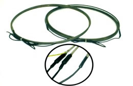
Elementos calefactores en tubo de aleación de acero inoxidable AISI 321 ó AISI 304 recocido de Ø8 mm y capuchón de silicona vulcanizado con grado de protección contra la humedad IP-67.
Modelos RRFI, EFI y RFIE. Diversas medidas y potencias, tensión 230V.
Cable calefactor de silicona
Cable calefactor de potencia lineal cuya flexibilidad lo hace adaptable a cualquier tipo de superficie. Tensión normalizada de 230V. Fabricados en varios tipos de recubrimientos.Posibilidad de fabricación a medida.
Bipolares de silicona tipo torpedo
Las resistencias bipolares de silicona son resistencias flexibles con aislamiento de silicona de Øext4,5 mm. Se les denomina tipo torpedo por su acabado en uno de los extremos en forma de vaina.
Potencia de 15W/m, tensión normalizada 230V.
Modelos RBS, varias longitudes.
Cable calefactor tipo paralelo
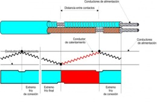
Los cables calefactores de tipo paralelo, tienen una potencia por metro lineal constante independiente de su longitud. Ello permite suministrarlos en bobinas, pudiéndose cortar y terminar en obra, mediante un kit de retractilado. Los tramos de corte para el cable paralelo CCP son de 600 mm.
Modelos CCP de 20, 30 y 40W/m
Resistencias cobre recocido
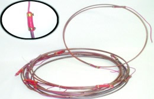
Elemento tubular blindado en tubo de cobre recocido de Ø6,4 mm, resistencia aislada con óxido de magnesio electrofundido y comprimido por laminación.
Potencia: 125 W por metro. Zona no calorífica: 110 mm. Acabadas con capuchón y cable de silicona por ambos lados. (Longitud de cables 300 mm.). Tensión normalizada ~230 V.
Resistencias para compresores
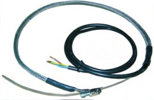
Elemento calefactor protegido como malla entretejida de cobre estañado.
Cable de manguera de silicona 2 hilos + Toma de tierra de 0,75 mm², de 1000 mm de longitud.
Aislamiento mínimo: 100 MW (a 2500 V), tolerancia en potencia: ±10%, tensión normalizada ~230 V.
Cintas calefactoras alta temperatura
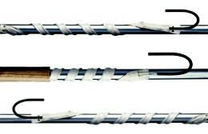
Cintas calefactoras de potencia lineal para alta temperatura. Alta flexibilidad, fácil de instalar, no daña las superficies donde se aplican, mínimo radio de curvatura. Alimentación por un único extremo. En fibra de vidrio, fibra de cuarzo, con malla de acero.
Cable calefactor aislamiento mineral
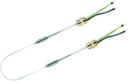
Aislamiento de Oxido de Magnesio. Funda exterior de aleación CuNi, acero inoxidable 1.4541 (AISI 321). Racores M20x1,5, salidas frías por ambos lados de 700 mm long.
Dimensiones según valor óhmico: Min Ø3,2 mm-Max Ø6,5 mm
Radio de curvatura mínimo: 5 veces el diámetro
Potencia máxima: Hasta 150 W/m dependiendo de la temperatura. Tensión nominal: Hasta 500 V
Cable calefactor autorregulante
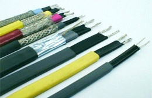
El elemento calefactor insertado entre dos conductores de cobre estañado está compuesto de una matriz de poliolefina combinada con gran cantidad de partículas de carbono. Adapta siempre y en cualquier lugar la potencia disipada a la temperatura especifica necesaria en cada caso.
El cable calefactor autorregulante reacciona ante cualquier variación de temperatura y suministra, en cada punto de un sistema.
Mangueras calefactoras
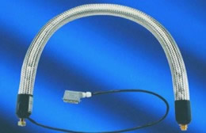
Las mangueras calefactoras son la solución ideal para el transporte flexible de líquidos o gases sin pérdidas de calor.
Potencia de calefacción hasta 310 W/m
Longitud máxima desde 0,3 m hasta 60 m
Diámetro nominal DN4 hasta DN25
Temperatura de trabajo hasta 250 °C
Presión de trabajo 80 bar (T1 - DN25) 500 bar (T3 - DN6)
Tensión nominal 12 V - 24 V - 110 V - 230 V - 400 V.
Laminares flexibles autoadhesivas
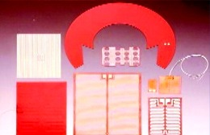
Las resistencias laminares BSA se obtienen grabando al ácido un circuito de aleación resistiva, recubierto posteriormente con un aislamiento de silicona.
Material del aislamiento externo: Caucho de silicona reforzado con tela de vidrio de 0,7mm ±0,1 de espesor.
Adhesivo posterior 3M 966. Temperatura máxima de funcionamiento 200°C . Conexiones Cables de PTFE blanco de 500 mm. Fabricaciones especiales a medida.
Banda calefactora de silicona, AFBS
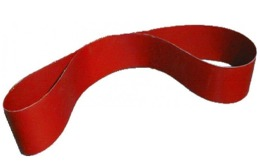
Las bandas calefactoras flexibles de silicona AFBS son delgadas, ligeras de peso, resistentes al agua y al ozono y también proporcionan calor en las superficies que no se pueden calefactar fácilmente con resistencias metálicas.
Rango de temperatura: Hasta +180 °C en continuo. Puntas +230 °C en cortos períodos de tiempo.
Tensión normalizada ~230 V
Banda calefactora de silicona, AFAFS
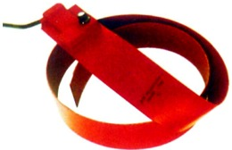
Las bandas calefactoras AFAFS debido a su concepción (hilo resistivo bajo silicona vulcanizada), permite una extraordinaria flexibilidad de uso. Las dimensiones de las bandas AFAFS cubren la mayor parte de los bidones estándares.
Además, gracias a su sistema de fijación con muelle, es posible la instalación en bidones de dimensiones específicas.
Rango de temperatura: Hasta +180 °C en continuo.
Tensión normalizada ~230 V
Banda de silicona, AFHSSD
Las bandas calefactoras AFHSSD son un método sencillo y eficaz de aplicar calor a bidones. El AFHSSD está específicamente diseñado para fundir o reducir la viscosidad de jabones, grasas, barnices, y productos con base de aceite.
El elemento calefactor está recubierto de PTFE y embutido entre capas múltiples de silicona recubierta con de fibra vidrio.
El sistema de ajuste de muelle y pinza asegura un buen contacto superficial con el bidón. Tensión normalizada ~230 V
Termostato regulable de 20 °C a 120 °C en caja de ABS negra.